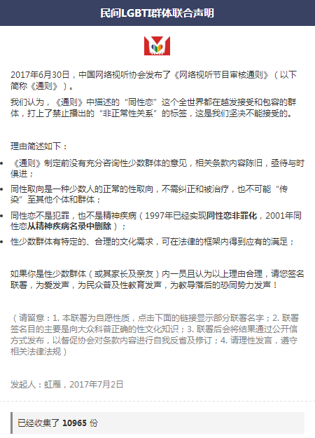

中国网络视听节目服务协会：
你好！
对贵会发布的《网络视听节目内容审核通则》（以下简称《通则》），我们有以下观点和建议，敬请思考。
1. 协会有没有权利制定这样的规则？
协会制定的规则理论上讲只对协会会员产生约束。但实际上，贵协会发布这个“通则”，试图对宪法意义上的“言论自由”进行限制，对性少数人群做了道德上、医学上甚至法律上的评价。试问，贵会，有这样的权力吗？
2. 《通则》第八条第(六)款第2项的规定，把“同性恋”打上“非正常性关系”的标签，但是，我们认为这是违背科学常识（包括自然科学和社会科学）的描述，理由如下：
1) 同性取向是人类一种少数人的正常的性取向，古今文明中都存在，不需纠正和被治疗；
2) 1990年，世界卫生组织正式将同性恋从疾病名册中去除；
3) 2001年，在“中华精神科学会”推出的第三版“中国精神疾病诊断标准”(CCMD-3)里，将同性恋从精神疾病分类中删除。
3. 该条文公然违背宪法精神，且侵犯了性少数群体的合法权利。
1) 中华人民共和国公民在法律面前一律平等，宪法第四十七条载明中国公民有文学艺术创作和其他文化活动的权利；
2) 宪法第三十八条明确规定：禁止用任何方法对公民进行侮辱、诽谤和诬告陷害；
3) 中国法律里从未有明确同性恋被定罪的条文；
4) 贵会发布的《通则》里的相关规定，对全世界的性少数群体均构成侵权，贬低了人格，侵犯了名誉。恶劣影响不言而喻。
为了征求社会公众对这个《通则》的看法，我在网上发起了联合声明，联署从7月2日晚上开始至5日早上结束，共有10965人作出回应(请看附图)。从收集表单的心声表述不难看出，他们对《通则》中的相关言论是多么的愤怒，并期望能够被平等的对待。
“执古以绳今，是为诬今；执今以律古，是为诬古”，我们建议，贵会，尤其是相关编制《通则》的同志，应解放思想，从世界文化大格局的角度出发，顺应科学和文化发展趋势，跟上人类文明进程，重新审视该《通则》的糟粕部分，并注意咨询相关群体的意见和建议，对不符合民意的条款进行修订或删除。
子曰：“不患人之不己知，患不知人也”，只有通过不断学习，多接触不同阶层的人民群众，多听听他们的故事，了解不同阶层民众的不同文化需求，才有利于制定出符合人民利益的规章制度。真诚地希望贵会能够本着实事求是的原则，多调查研究，走群众路线，听人民呼声，力求科学决策，使《通则》能真正服务于网络视听文化的进步与繁荣。
专此函告！
虹雁
2017年7月17日
附：发起的联合声明截图
